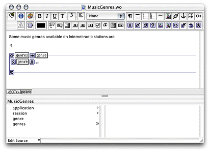
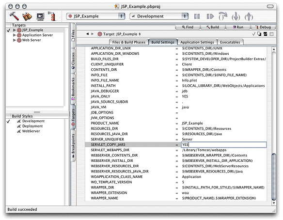
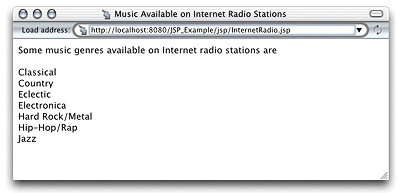

| PATH |

This section explains how to write a JSP page that makes use of two WebObjects classes, NSArray and NSMutableArray, to pass information to a component called MusicGenres. You'll continue to work with the JSP_Example project.
Listing 3-2 InternetRadio.jsp file
<%-- InternetRadio.jsp --%>
<%@ taglib uri="/WOtaglib" prefix="wo" %>
<%-- Import statements --%>
<%@ page import="com.webobjects.foundation.*" %>
<%@ page import="com.webobjects.jspservlet.*" %>
<%-- Initialize JSP/servlet–WebObjects integration system --%>
<%
WOServletAdaptor.initStatics(application);
%>
<%-- Create musical-genre list --%>
<%
NSMutableArray genres = new NSMutableArray();
genres.addObject(new String("Classical"));
genres.addObject(new String("Country"));
genres.addObject(new String("Eclectic"));
genres.addObject(new String("Electronica"));
genres.addObject(new String("Hard Rock/Metal"));
genres.addObject(new String("Hip-Hop/Rap"));
genres.addObject(new String("Jazz"));
%>
<HTML>
<HEAD>
<TITLE>Music Available on Internet Radio Stations</TITLE>
</HEAD>
<BODY>
<wo:component className="MusicGenres" bodyContentOnly="true">
<wo:binding key="genres" value='<%= genres %>' />
</wo:component>
</BODY>
</HTML> Note
the invocation of the initStatics method
of the WOServletAdaptor class. It performs the initialization of
objects needed to integrate WebObjects with your servlet container
(for example, adding a WOSession object to the JSPSession object).
InternetRadio.jsp in
the JSP_Example/Servlet Resources/jsp directory.genres and genre keys
to MusicGenres using WebObjects Builder. genres is
an array of Strings and genre is
a String. Add a setter method for genres.Alternatively,
you can add the following code to MusicGenres.java:
protected String genre;
/** @TypeInfo java.lang.String */
protected NSArray genres;
public void setGenres(NSArray newGenres) {
genres = newGenres;
}Figure 3-6 The MusicGenres component in WebObjects Builder
SERVLET_COPY_JARS build
setting and set its value to YES ,
as shown in Figure 3-7.Figure 3-7 Telling Project Builder to copy WebObjects classes to the WAR file
To view the output of the InternetRadio JSP page in Tomcat use the following URL:
http://localhost:8080/JSP_Example/jsp/InternetRadio.jsp
You should see a page like the one in Figure 3-8.
Figure 3-8 The output of InternetRadio.jsp
